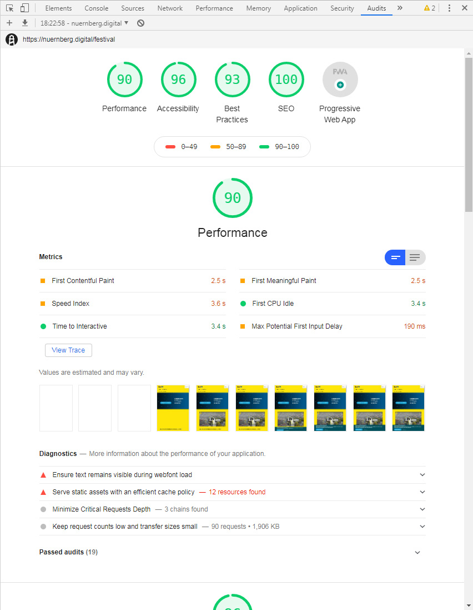
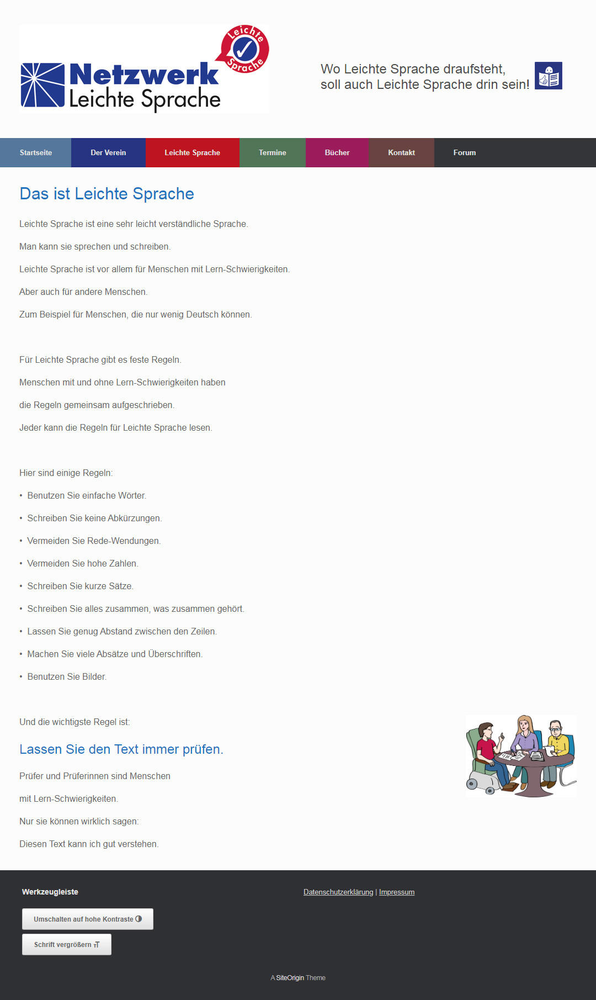

Kriegen wir schon kaputt!
Let's ruin all the accessible things
Wer ist der Kerl?
- Erste Codezeilen als 10-Jähriger, Websites seit 1995
- Ausbildung im Architektur- und Designumfeld
- Agentur seit 2000
- Fokus auf Barrierefreiheit
- Qualifizierter BITV- / WCAG-Prüfer im BITV-Test-Prüfverbund
- Initiator und Hauptorganisator des Accessibility Club
Was redet der eigentlich?
- 1. Barrierefreiheit im Web
-
- Was, für wen und warum?
- Rechtslage & Regelwerke
- 2. Grundlagen für Webentwickler & -designer
-
- Struktur & Semantik
- Design (+ Interaktion)
- Inhalt & Co.
Building the most inaccessible site possible with a perfect Lighthouse score
Lighthouse
Automatisierte Tests für Websites
- Teil der Chrome DevTools
- Kommandozeilen-Tool
- Node.js-Modul
- Gute Baseline, kann aber manuelle Tests nicht komplett ersetzen!

Live-Breaking
statt Live-Coding?
- Nicht durchzuhalten ...
- (... ohne als Idiot dazustehen)

Takeaways
- Solide Basis für barrierefreie Websites
- Wichtigste Optimierungen
- Häufigste Fallen & Fehler
- Nützliche Tools & Techniken
Barrierefreiheit im Web
Was, für wen und warum?
The power of the Web is in its universality. Access by everyone regardless of disability is an essential aspect.
Barrierefreies Internet sind Web-Angebote, die von allen Nutzern unabhängig von körperlichen oder technischen Möglichkeiten uneingeschränkt (barrierefrei) genutzt werden können.
Nutzer
Um wen geht es eigentlich?
Menschen mit Behinderung
- Körperliche Behinderungen
- z. B. motorische Einschränkungen
- Sinnesbehinderungen
- z. B. Blindheit, Sehschwächen, Fehlsichtigkeit, Gehörlosigkeit, Taubblindheit
- Sprachbehinderungen
- in Laut und / oder Schrift
- Kognitive Behinderungen
- z. B. Lernbehinderung, mangelndes Abstraktionsvermögen, Dyslexie
Spezielle Nutzer
- Mobile Nutzer (eingeschränkte Internetverbindung, schwache technische Ausstattung, eingeschränkter Funktionsumfang)
- Unerfahrene Nutzer
- Senioren & Kinder
- Nicht-Muttersprachler
- Suchmaschinen / Robots
- u.v.m.
Jeder ist betroffen!

- zumindest in bestimmten (Lebens)Situationen!
Barrieren
Arten von Hindernissen
Technisch-funktionale Barrieren
beruhen auf verwendeten Techniken oder Programmierungen, Hard- und Softwareeinschränkungen (auch durch assistive Technologien) oder Problemen bei der Datenübertragung
- liegen im Verantwortungsbereich von Webentwicklern und -dienstleistern
- Richtlinien zur Beseitigung sind die BITV, WCAG, UUAG, ATAG
Beispiele für Technisch-funktionale Barrieren
- fehlende oder fehlerhafte Struktur & Semantik (HTML)
- mangelhafte Tastaturbedienbarkeit
- schlechte technische oder perzeptive Performance
- mangelnde Fehlertoleranz und fehlende Rückfallmechanismen
- unnötig große Datenmengen (ggf. auch finanzielle Barriere)
- Hard- und Softwareanforderungen, die Clientsysteme u. U. nicht abbilden können (Leistung, Bildschirmgröße, Sensoren, Ein- & Ausgabegeräte)
Design-Barrieren
beruhen auf unflexibler oder mangelhafter Gestaltung
- liegen im Verantwortungsbereich von Webdesignern
- Richtlinien zur Beseitigung sind die WCAG
Beispiele für Design-Barrieren
- schlechte Nutzerführung, zu komplexe Abläufe (UX)
- mangelhafte Textgestaltung (z.B. zu kleine Schrift, schwer lesbare Schriftart)
- zu schwache / starke Kontraste
- schwierige Farbverhältnisse oder Abhängigkeit von korrekter Farbwahrnehmung des Nutzers
- suboptimale Darstellung durch mangelnde Responsivität
- CAPTCHAs
Redaktionelle & inhaltliche Barrieren
beruhen auf unzureichender redaktioneller oder struktureller Aufbereitung des Inhalts und seiner Umsetzung für das Internet
- liegen im Verantwortungsbereich von Webredakteuren
- Hilfen zur Beseitigung sind europäische Richtlinien für leichte Lesbarkeit, WCAG
Beispiele für Redaktionelle & inhaltliche Barrieren
- Sprachliche Komplexität (fehlende Textstrukturen, verschachtelte Sätze, umständliche Formulierung, Fachbegriffe)
- Bilder und Grafiken ohne alternative Beschreibungen, Text in Bildern
- Bewegtmedien ohne alternative Aufbereitungen (Untertitel, Audiodeskriptionen, Transkriptionen)
Organisatorische Barrieren
sind bedingt durch organisatorische Umstände und das Umfeld, in dem Entscheidungen getroffen werden
- liegen im Verantwortungsbereich von Auftraggebern und Projektleitern
- benötigen Bewusstmachung, Aufklärung und Priorisierung
Beispiele für Organisatorische Barrieren
- mangelndes Bewusstsein und fehlender Handlungswille in Sachen Barrierefreiheit
- mangelnde technische Fertigkeiten
- Angst vor hässlichen, eingeschränkten Ergebnissen
- fehlendes Budget (z. B. für Gebärdensprach-Videos, alternative Aufbereitungen, einfache Sprache)

Gründe für Barrierefreiheit
Warum müssen wir uns kümmern?
Weil ...
- wir mit unseren Websites möglichst viele Menschen erreichen möchten
- sich die Gesetzeslage ändert
- wir alle irgendwann selbst betroffen sind
- wir damit einen wichtigen Beitrag zur einer inklusiven Gesellschaft leisten
Gesetzeslage
Es ist Bewegung in der Sache!
International
- Vorreiter USA, Großbritannien
- USA: aktuell etwa eine ADA-Klage pro (Arbeits)Stunde (Quelle)
Europa
- EU-Richtlinie 2016/2102 über den barrierefreien Zugang zu den Websites und mobilen Anwendungen öffentlicher Stellen (seit Dezember 2016)
- Gemäß des EAA (EU-Richtlinie 2019/882) gibt es ab 28. Juni 2025 eine einklagbare Verpflichtung für erste privatwirtschaftliche Unternehmen (verabschiedet im Frühjahr 2019)
- Vorreiter Österreich: Barrierefreiheit ist Pflicht für Online-Shops (seit 2016)
Deutschland
- Barrierefreiheit ist seit 2002 Pflicht für öffentlich zugängliche Internetangebote der Bundesverwaltung gem. BITV (seit 2002)
- Seit September 2018 Pflicht für alle öffentlichen Stellen (z. B. Landesministerien, Jugendämter, Polizeibehörden, Schulen, städtische Krankenhäuser, Sparkassen, Industrie- und Handelskammern, etc.) gemäß EU-Richtlinie 2016/2102; unterschiedliche Umsetzungsfristen
- Seit 25. Mai 2019 bezieht sich die BITV im Wesentlichen auf die WCAG 2.1
WCAG-Adoption
Building Blocks
für Webentwickler, -designer und -redakteure
Zutaten
für barrierefreie Websites
- Semantik & Struktur
- HTML5 + WAI-ARIA
- Design
- CSS
- Interaktion
- JavaScript
- Inhalt
- Alternative Aufbereitungen, Leichte Sprache, etc.
Disclaimer
Tim Berners-Lee
Valides, semantisches Markup
- HTML als deklarative Auszeichnungssprache richtig nutzen!
- 99% aller HTML-Tags haben eine Bedeutung (Ausnahmen
<div>,<span>...) - Absätze mit
<p>statt<div>oder<br> - Listen mit
<ul>,<ol>und<dl> - Datentabellen mit korrekt Tabellenköpfen
<th>, nicht für Layoutzwecke!
WAI-ARIA
CSS
JavaScript
Inhalt
Einfache / Leichte Sprache
- Sprach- und Rechtschreibregeln sowie Empfehlungen zu Typografie und Mediengebrauch
- zielt auf leichte Verständlichkeit
- Nicht 100% streng standardisiert
- Verein Netzwerk Leichte Sprache
- Ratgeber des Bundes-Ministeriums für Arbeit und Soziales

Barrierefreiheit ...
- ist weder schwer, noch hässlich oder beschränkt
- beginnt mit einem »Mind Shift«
- steckt schon immer in vielen Technologien, die wir täglich nutzen
- ist mit einfachen Mitteln grundlegend herzustellen
- ist kein gut gemeintes »On Top«-Feature, sondern unbedingtes Qualitätskriterium
The biggest misconception about accessibility is that by adding it you're doing somebody a favor. You're not, you're doing your job. #a11y
— james williamson (@jameswillweb) 20. Oktober 2016
Danke!
- 16.-17. November 2019, Berlin
- Accessibility Club Summit 2019
Barcamp + Workshops — https://a11y.club - 20. März 2020, Reykjavík, Island
- Material 2020: The Web as a Material — https://material.is/2020
Discount-Code jd19de bis 20.9.2019